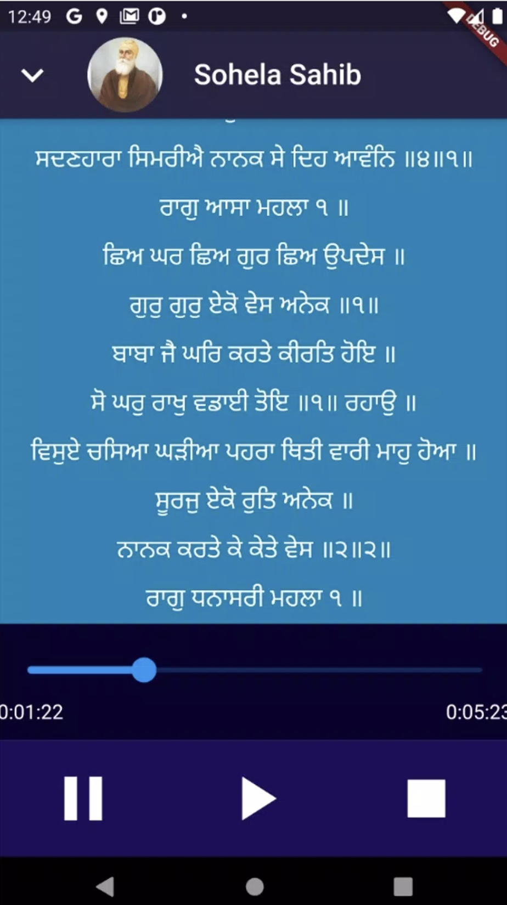
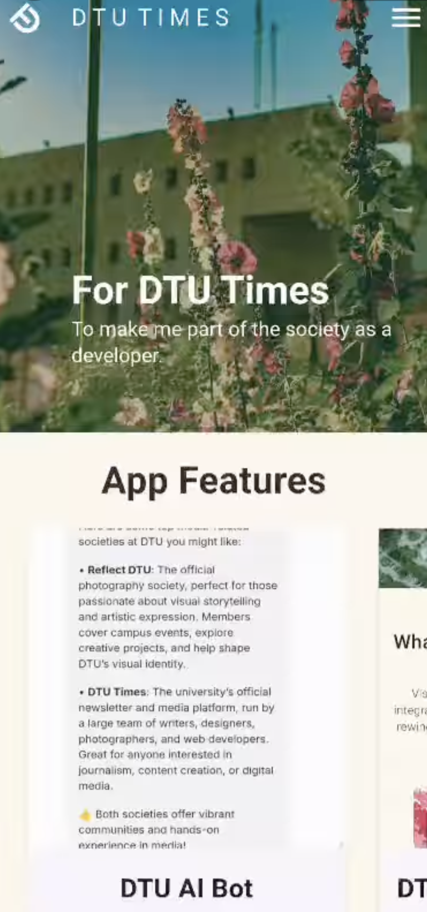

About Me
I am a proactive and deeply curious technology student with a strong drive to build practical, impactful solutions. My academic journey has led me to explore a diverse ranget of computer science fields. I have hands-on experience in full-stack development, building applications with technologies like Node.js, Express, and Flutter. Beyond web and mobile development, I am actively engaged with more specialized domains. I have a keen interest in machine learning (exploring models from linear regression to gradient boosting) and computer vision (working with the OpenCV library). I also pursue advanced topics like quantum computing with Qiskit and low-level systems programming in C, including memory management and socket programming. A significant passion of mine is cybersecurity, where I regularly participate in 'Capture The Flag' (CTF) challenges, honing my skills in reverse engineering and digital forensics. I thrive on applying this knowledge to real-world problems. I have collaborated with a team of six on a project for the Smart India Hackathon (SIH), developed a 'Uniguide' application to help students with study abroad applications, and even architected a timetable generator using genetic algorithms. I also value giving back to the community, suchas by volunteering to teach children in slums about potential career options in technology. I am constantly seeking new challenges and am eager to leverage my broad technical skill set to solve complex problems.


Projects
Covid19Helper

During the start of lockdown there was a state wide competition in punjab ambassador of hope in which we have to create something to give hope to people around us.
I designed this website which showed covid cases,news through api and it had a checker feature which detected the risk by asking the Symptoms of the user.
And surprisingly I secured second prize in the competition winning a laptop.
Github link for the projectAudio path
This app was created for my grandma and later on I published this application on playstore but now it’s removed from play store because I didn’t accept new policies from play store as at that time I was preparing for JEE.
This app hosted prayers online on firebase and user can download the file and save it on there phone, it had an inbuilt lyrics shower which showed live lyrics with the audio.(at that time there was not such any third party plugin in flutter which can take in .lrc file and sync it with list view so I created one but I never made the it as an library.)
Download appDTUTimes-App
This application was developed using the Flutter framework and the Dart programming language, making it a cross-platform solution that can run on both iOS and Android from a single set of code. For its mapping features, it integrates the flutter_map library, which allows it to display interactive maps, possibly using OpenStreetMap data. The app also includes a built-in PDF reader by using the pdfx library, which provides the convenience of viewing documents directly within the app without needing another program. To provide a conversational experience, it connects to a third-party service called Botpress, which powers the app's chatbot by managing the artificial intelligence and natural language processing.
Github link for the projectSkills
Frontend Development
- HTML
- CSS
- JavaScript
- React.js
Backend Development
- Node.js
- Express.js
- MongoDB
Mobile Development
- Flutter
Security
- Web Security
- Penetration Testing